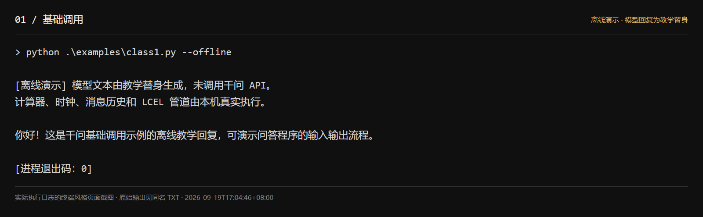
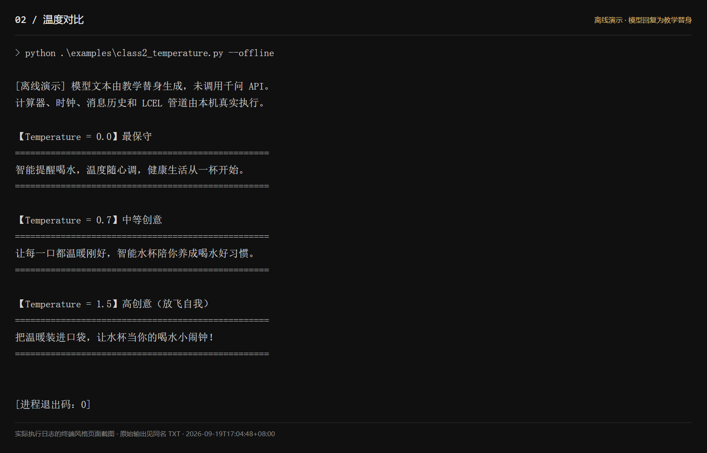
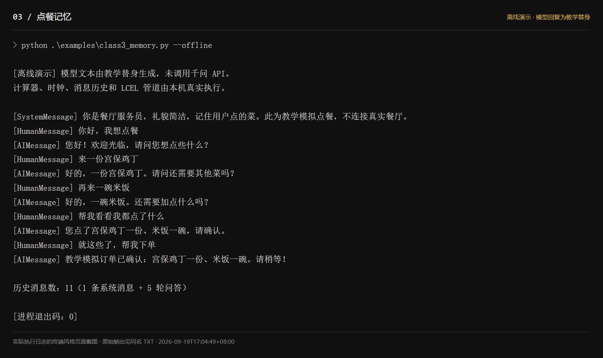
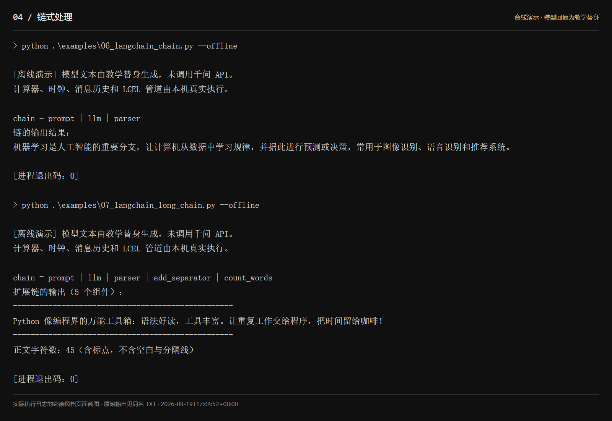
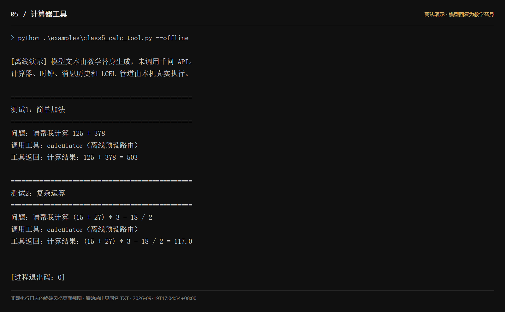
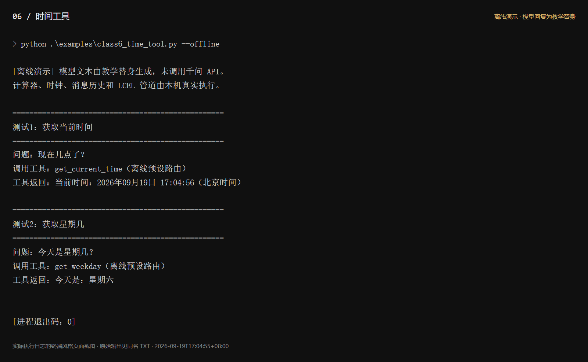

LangChain + Qwen 运行记录
离线演示 · 模型回复为教学替身。图片为实际执行日志的页面截图，不是原生 PowerShell 窗口截图。
01_基础调用
原始日志 · PNG 图片
02_温度对比
原始日志 · PNG 图片
03_点餐记忆
原始日志 · PNG 图片
04_链式处理
原始日志 · PNG 图片
05_计算器工具
原始日志 · PNG 图片
06_时间工具
原始日志 · PNG 图片